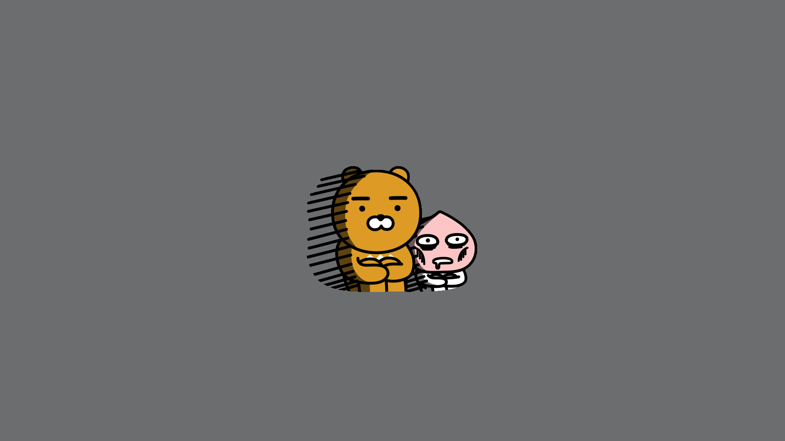

안녕하세요, div 입니다.
안녕하세요, div 입니다.
안녕하세요, div 입니다.
안녕하세요, span 입니다.
안녕하세요, span 입니다.
안녕하세요, span 입니다.
제목
row 1
첫 번째 행입니다.
HTML
CSS
Javascript
row 2
두 번째 행입니다.
google
naver
kakao
row 3
세 번째 행입니다.
라이언 라이언 라이언